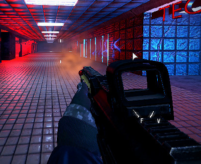

Module: bullet_system
Documentation last edited: October 22, 2025 at 8:00 UTC
Description

*Player weapon example, but it is used for NPCs, sentry guns, as well as anything shooting anything
Bullet system module that contains a base class, a bullet data class, a bullet trail scene, and other stuff. If you want to make a new "bullet system", you just make a new class that extends
BulletSystem
. If you want to use a bullet system - never use any directly, like
RaycastBulletSystem
. This system was made for easier replacement of bullet system in cases where it might be needed. You just use
BulletSystem
's API that consists of two simple methods:
update
and
shoot_bullet
. If you want to configure an impact/behavior of your bullet, you might as well need to do so in
BulletData
resource.
Usage example
# Running this logic in some random Node
# Creating a bullet data resource
var bullet_data: = BulletData.new()
bullet_data.min_damage = 10
bullet_data.max_damage = 100
bullet_data.min_armor_damage = 100
bullet_data.max_armor_damage = 200
bullet_data.bullet_force = 2.0
bullet_data.max_distance = 1000.0
bullet_data.spread = 0.1
# It can also be just loaded, since it can be saved as a resource file
var different_bullet_data = load("res://path/to/bullet_data.res")
# Creating and shooting
var bullet_system: BulletSystem
bullet_system = RaycastBulletSystem.new() # Using raycasts for this example
bullet_system.initialize(get_world().direct_space_state, self)
bullet_system.shoot_bullet(global_position, Vector3.FORWARD, bullet_data)
# Using the loaded bullet data instead
bullet_system.shoot_bullet(global_position, Vector3.UP, different_bullet_data)
General Information
Root directories list
assets, docs, src
Nodes
Classes
RaycastBulletSystem
BulletSystem
Resources
Other Scripts
None